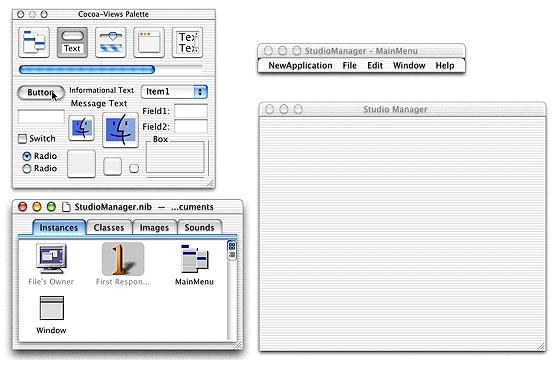

| PATH |

The most basic tasks of creating a Java Client application are as follows:
The tasks have much in common with those for developing HTML-based WebObjects applications. The major differences are the way you design your enterprise object classes and the way you create your application's user interface.
Java Client allows you to specify two enterprise object classes for each entity: one for the server and one for the client. The client and server classes can have different sets of properties and business logic. This means that programming a Java Client WebObjects application requires a specific design technique that isn't necessary in HTML-based development: object partitioning. Simply put, you have to determine whether you need different enterprise object classes for the client and the server and also what data and business logic to put in each class.
Usually, client objects have the more restricted set of data and behaviors, but it is really up to you to decide based on the requirements of the application and your business. As noted earlier, the primary criteria for partitioning are performance and security.
A Java Client WebObjects application gives you considerable flexibility in how you compose its user interface. Ideally you provide an application's entire user interface in a single Java application that runs on the client. But you can also combine Java Client applets and static and dynamic (WebObjects) HTML elements in various ways. You can have pages with or without Java Client applets or pages with multiple Java Client applets. For example, you could have a login page that takes the user to one of many Java Client pages based on some piece of account data. In addition, Java Client applets are not limited to the downloaded JFC components; as with any applet, they can create dialogs and secondary windows on the fly.
If your application's user interface uses static and dynamically generated HTML, you create those parts of the user interface in the normal way with WebObjects Builder (as described in "HTML-Based Applications" (page 37)). The process is different for creating a Java Client application or applet. Instead of using WebObjects Builder to create the user interface, you use an application called Interface Builder.
Note: If you're familiar with Cocoa development, the process for creating a Java Client user interface is nearly the same as the one for creating a Cocoa user interface for Mac OS X applications. |
In Interface Builder, you typically construct a user interface by dragging widgets from a palette and dropping them into a window, as shown in Figure 6-5. It does more, however, than simple user interface layout. Interface Builder also lets you create, edit, and connect objects so they can communicate with one another at runtime.
Figure 6-5 Composing a user interface with Interface Builder

© 2001 Apple Computer, Inc.